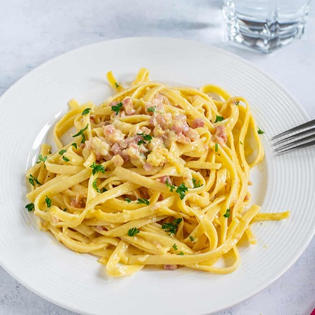
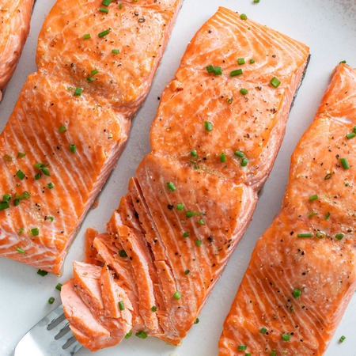
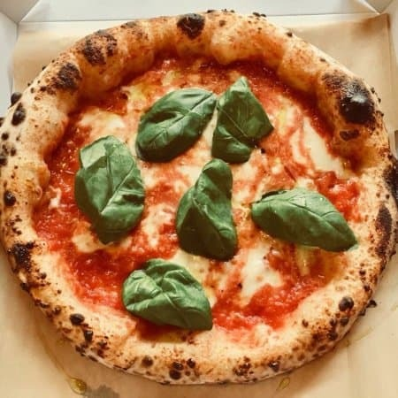
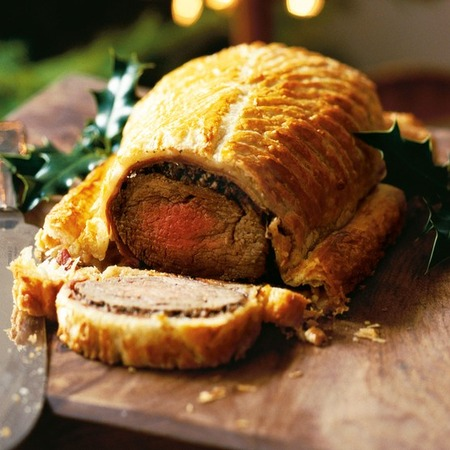

Szeretek főzni, mert számomra ez nem csupán egyszerű tevékenység, hanem egy szenvedély, amely élettel tölt el. Az elkészített ételek a kreativitásom és érzékeim kifejeződésének eszközei. Minden egyes fogás egy kis történet, ahol az ízek és illatok együttesen mesélnek valami különlegeset. Nagyon szeretem a tenger gyümölcseit, a fűszeres ételeket, illetve a tésztákat. A kedvenc konyháim az amerikai, india, és az olasz.



